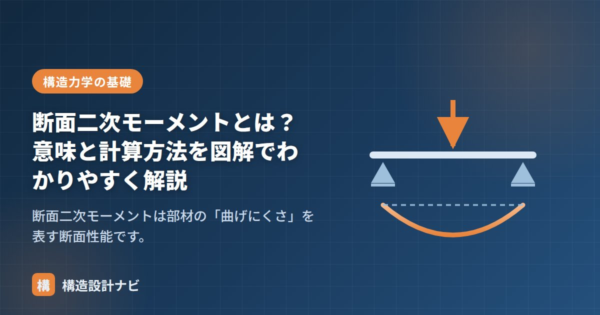

断面二次モーメントとは？意味と計算方法を図解でわかりやすく解説

断面二次モーメントは、部材の「曲げにくさ」を表す断面性能です。構造力学・構造設計のあらゆる場面に登場する、最も重要な値のひとつです。
この記事では、断面二次モーメントの意味、公式、計算例、そして混同しやすい断面係数との違いまでを順に解説します。
断面二次モーメントの意味
同じ材料・同じ長さの梁でも、断面の形によって曲げに対する強さ（変形しにくさ）は大きく変わります。たとえば定規を曲げるとき、平らに寝かせた状態では簡単に曲がりますが、縦に立てるとほとんど曲がりません。
この「断面の形による曲げにくさの違い」を数値で表したものが断面二次モーメント I です。値が大きいほど曲げにくい（曲げ剛性が高い）断面ということになります。
断面二次モーメントは「中立軸から遠い位置にどれだけ断面積が分布しているか」で決まります。同じ断面積でも、中立軸から遠くに材を配置するほど I は大きくなります。H形鋼のフランジが上下に離れているのはこのためです。
長方形断面の公式
幅 b、成（高さ）h の長方形断面の、強軸まわりの断面二次モーメントは次式で求められます。
図：長方形断面。中立軸（図心を通る軸）まわりの曲げにくさが I = bh³/12
注目すべきは、成 h が3乗で効くという点です。幅を2倍にしても I は2倍にしかなりませんが、成を2倍にすると I は8倍になります。梁を曲げに強くしたいなら、幅を広げるより成を大きくするほうが圧倒的に効率的です。
計算例：幅300mm × 成600mmのRC梁
仮にこの梁を横に寝かせる（幅600mm × 成300mm）と、I = 600 × 300³ / 12 = 1.35 × 10⁹ mm⁴ となり、同じ断面なのに曲げにくさは1/4になってしまいます。
主な断面の公式一覧
| 断面の形状 | 断面二次モーメント I | 備考 |
|---|---|---|
| 長方形（幅b × 成h） | bh³ / 12 | 中立軸＝図心を通る水平軸 |
| 正方形（一辺a） | a⁴ / 12 | どの図心軸まわりでも同じ |
| 円形（直径D） | πD⁴ / 64 | 方向によらず一定 |
| 中空長方形 | (BH³ − bh³) / 12 | 外形から内空を差し引く |
断面係数との違い
断面二次モーメント I とよく混同されるのが断面係数 Z です。役割の違いを押さえましょう。
- 断面二次モーメント I：たわみ（変形）の計算に使う。「曲げにくさ」の指標。
- 断面係数 Z：曲げ応力度の計算（σ = M / Z）に使う。「壊れにくさ」の指標。
長方形断面では Z = bh² / 6 で、I を縁までの距離 h/2 で割った値（Z = I / (h/2)）に一致します。Z の意味と計算方法は「断面係数とは？曲げ応力度の計算方法」で詳しく解説しています。
断面性能の計算は無料の断面性能計算ツールで検算できます。数値を入れるだけで I・Z・断面積・断面二次半径が求められます。
実際のRC梁は単純な長方形ではなく、スラブと一体になった逆T形として働くことがあります。剛性を厳密に見たい検討では有効幅を考慮したT形断面のIを使い、単純な矩形だけで計算するとたわみを過大に見積もる場合がある点に注意しています。
平行軸の定理：図心以外の軸まわりを求める
公式が使えるのは「図心を通る軸」まわりの場合だけです。複数の部材を組み合わせた断面では、各部分の図心が全体の図心とずれるため、平行軸の定理を使って換算します。
この式が意味するのは、「自分自身の曲げにくさ」＋「図心から離れていることによる寄与」という2つの足し算です。しかも第2項は距離yの2乗で効くため、図心から離れた位置にある部分ほど、断面全体の曲げにくさに大きく貢献します。H形鋼のフランジを上下に離して配置するのは、まさにこの効果を狙ったものです。
計算例：T形断面
幅300mm×厚さ100mmのフランジと、幅100mm×高さ300mmのウェブからなるT形断面を考えます。
| 部分 | 断面積 A | 下端からの図心位置 | A × 位置 |
|---|---|---|---|
| フランジ（300×100） | 30,000 mm² | 350 mm | 10,500,000 |
| ウェブ（100×300） | 30,000 mm² | 150 mm | 4,500,000 |
| 合計 | 60,000 mm² | — | 15,000,000 |
次に、各部分について平行軸の定理を適用します。
I ＝ 25.0×10⁶ ＋ 30,000×100² ＝ 325×10⁶ mm⁴
ウェブ：I₀ ＝ 100×300³/12 ＝ 225×10⁶ y ＝ 250 − 150 ＝ 100mm
I ＝ 225×10⁶ ＋ 30,000×100² ＝ 525×10⁶ mm⁴
全体：I ＝ 325×10⁶ ＋ 525×10⁶ ＝ 850×10⁶ mm⁴
フランジは自分自身の曲げにくさ（25×10⁶）よりも、図心から離れていることによる寄与（300×10⁶）のほうが12倍も大きくなっています。断面二次モーメントは「材料をどこに置くか」で決まることが、数値からもはっきり読み取れます。
実務での使いどころ
| 検討項目 | Iの使われ方 |
|---|---|
| たわみの計算 | δ＝5wL⁴/384EI など、分母に直接入る。Iが大きいほどたわみは小さい |
| 部材の剛度（K＝I/L） | ラーメンの応力を各部材に分配する際の比率を決める |
| 座屈荷重 | Pe＝π²EI/Lk²。弱軸まわりのIが座屈を支配する |
| 剛度増大率 | スラブ付き梁では、T形断面として算定したIが元のIの何倍になるかを評価する |
実務では、これらの計算を一貫構造計算プログラムが自動で行いますが、断面を変更したときに剛性がどう変わるかを感覚的に見積もれることは重要です。梁せいを1割増やせばIは約1.3倍、2割増やせば約1.7倍になる——この程度の見当がつくと、断面計画の判断が速くなります。
よくある質問
Q1. 断面二次モーメントの単位はなぜmm⁴なのですか？
定義が「面積×距離の2乗」の積分だからです。面積がmm²、距離の2乗がmm²なので、掛け合わせるとmm⁴になります。実務では数値が大きくなりすぎるため、cm⁴（1cm⁴＝10⁴mm⁴）で表記されることも多く、鋼材の断面性能表は通常cm⁴で記載されています。単位の換算ミスは計算結果が1万倍ずれる原因になるので注意が必要です。
Q2. 中空断面（角形鋼管）のIはどう計算しますか？
外形の長方形から内空の長方形を差し引きます。外形が幅B・高さH、内空が幅b・高さhなら、I＝(BH³−bh³)/12です。中空にしても、なくなるのは中立軸に近く曲げへの寄与が小さい部分なので、断面積が減る割にIはあまり減りません。これが、中空断面が軽くて効率的といわれる理由です。
Q3. 2本の梁を重ねると断面二次モーメントは2倍になりますか？
接合方法によります。単に重ねただけで互いにずれる状態なら、それぞれが独立して曲がるため、Iは単純に2倍にしかなりません。しかしボルトや接着で一体化してずれないようにすると、全体を1つの断面（高さが2倍）とみなせるため、I＝b(2h)³/12となり、元の8倍になります。合成梁でスタッドボルトによるずれ止めが不可欠なのは、この一体化を確保するためです。
まとめ
- 断面二次モーメントは断面の「曲げにくさ」を表す値（単位：mm⁴）。
- 長方形断面では I = bh³/12。成 h が3乗で効くため、梁は成を大きくするのが効率的。
- たわみの検討には I、応力度の検討には断面係数 Z を使う。